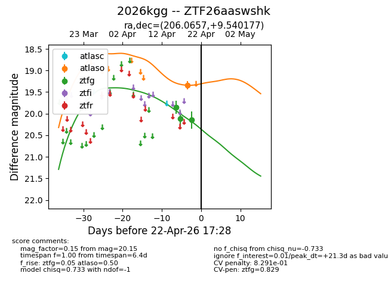
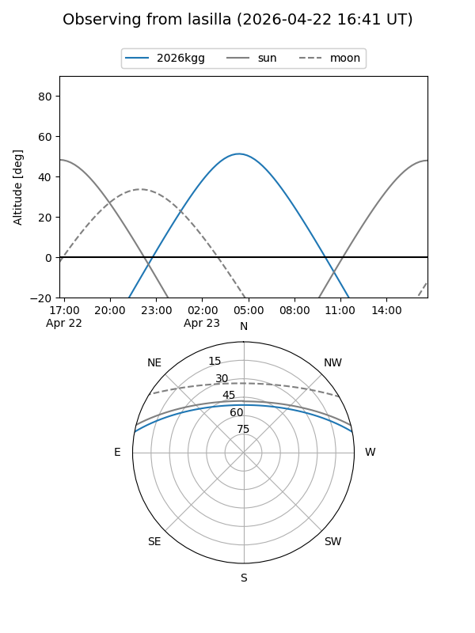
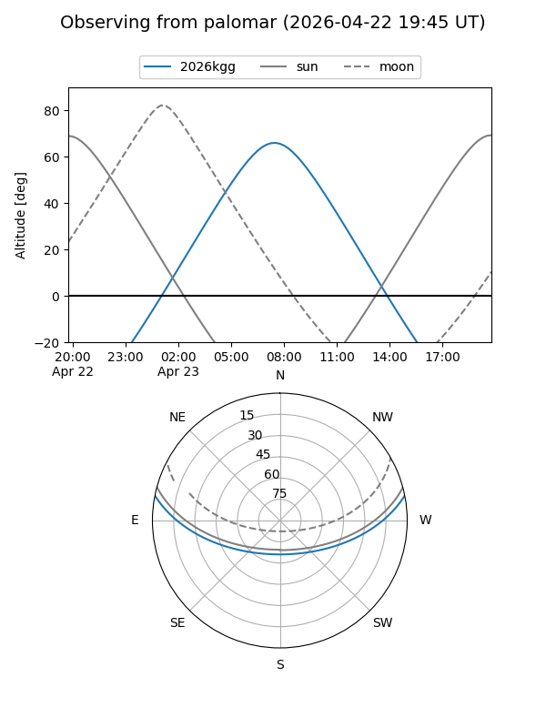
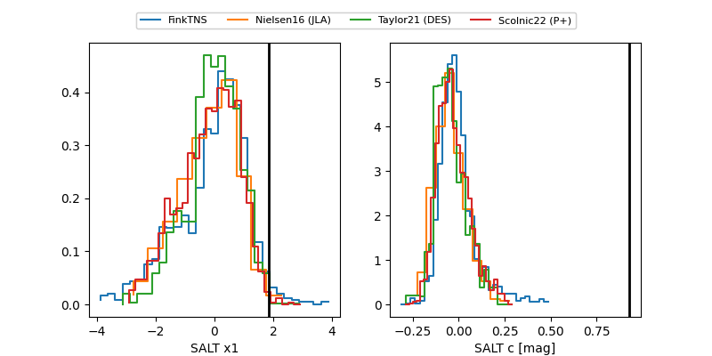

2026kgg
Target 2026kgg at 2026-04-22 17:29
Aliases and brokers:
FINK: link
Lasair: link
ALeRCE: link
TNS: link
YSE: link
alt names
ZTF26aaswshk (ztf,fink_ztf)
2026kgg (tns,yse)
Coordinates:
equatorial (ra, dec) = 206.0657,+9.54018
equatorial (HMS+DMS) = 13:44:15.77,+09:32:24.64
galactic (l, b) = (340.7483,+68.44145)
Flags:
likely cv
Photometry:
last atlaso=19.34, ztfg=20.15
1 atlaso, 3 ztfg detections
Lightcurve

Visibility


Additional plots
